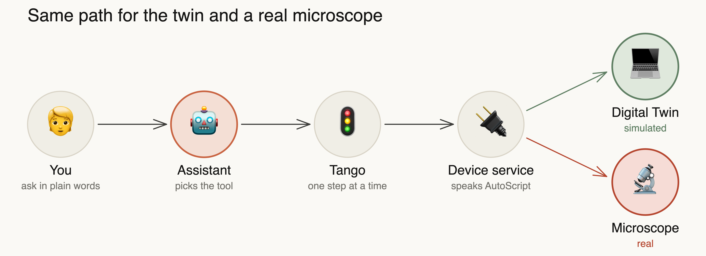

Microscopy Hackathon 3
An assistant for electron microscopy, in one desktop app.
Read the current defocus.
mcp__tem_twin__get_defocus
The assistant calls the tool on the instrument you ticked, then reports the value.
Twin 3 simulates a Talos F200X in the app. It answers the same AutoScript calls as a microscope, so the assistant takes the same path to both.
Meet the Digital TwinAn instrument is a host:port. Nothing above the device service needs to know which one it is.

Register and approve instruments on your own computer. No server involved.
🤖DeepSeek Harness runs the agent loop, tools and sessions.
🧩Write a Cordis plugin in two files and install it from a folder.
📦Tango, the twin and the assistant start for you.
📚The Wiki keeps skills, papers, manuals and your history searchable, with citations.
🧭Open problems in the twin, GUI control, workflows and the harness.
Tested on macOS on Apple Silicon. Windows and Linux are configured but not tested, and it has not yet been used with a real microscope.
What is not done yet